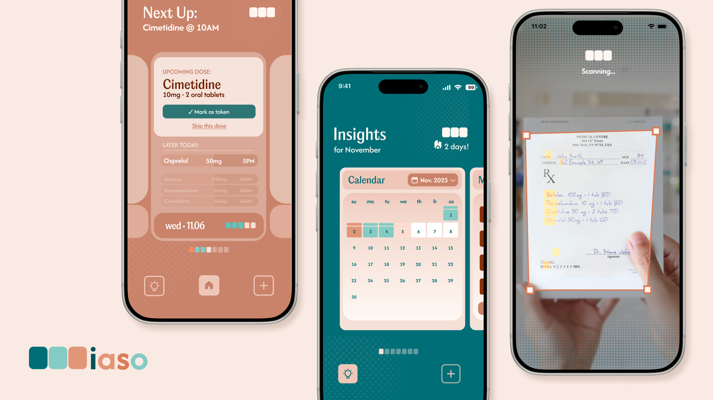
ux/mobile · ios · 2025 – ongoing
Iaso
Track your daily doses. Learn what you're taking. Stay accountable.
125,000 Americans die annually from not taking their medications correctly. The apps built to fix this mostly get deleted within a month. Nobody is designing for month 6.
Iaso is my attempt to build a medication app that still matters a year later — growing out of Atlas, a hardware adherence ecosystem I designed previously, where I learned the physical device was only half the problem.
How do we digitize a very physical process?
A pillbox is low-tech, reliable, and immediately understood. Every medication app tries to replace it — and most fail. The challenge wasn't building another reminder app. It was building something that earns the trust a pillbox already has, while doing things a pillbox structurally cannot.
How might we design a medication tool that earns long-term trust, without adding more cognitive load to the those who already have to manage the most?
The product
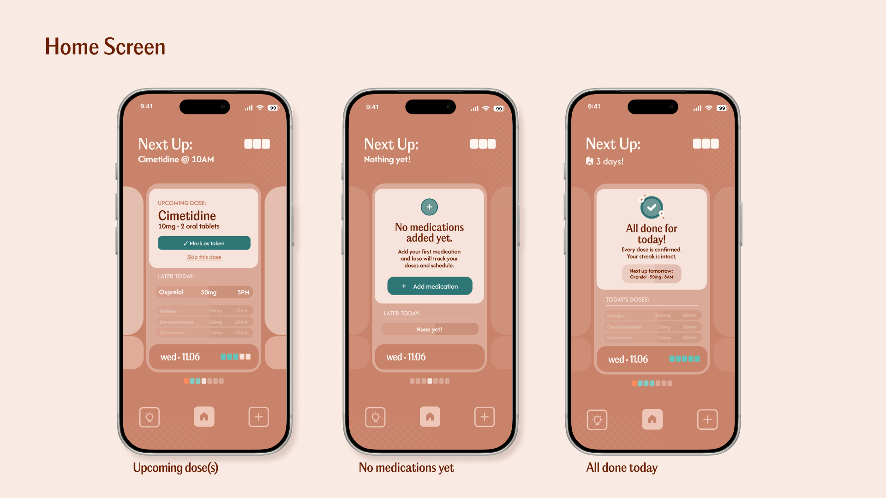
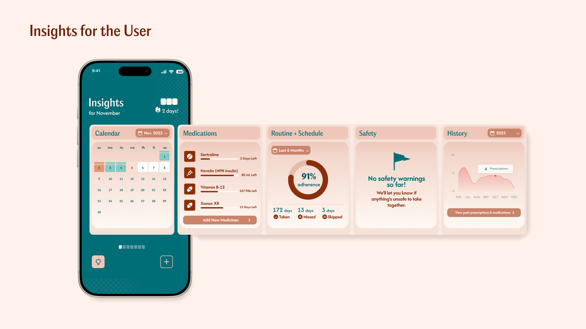
AI handles recognition; the user retains authority. The design choice: in a high-stakes domain, suppressing a flag to reduce friction is the wrong tradeoff. False negatives cost more than false positives. The medication gets added, the warning follows them forward.
Smart AI Scan
On-device ML scans a prescription and auto-fills medication details (the biggest setup friction today). Keeps health data private and offline. User reviews and confirms before saving.
Make reminders context-aware
Time-based reminders fail when routines change.
Two solutions simultaneously: GPS location nodes — reminders that fire when you arrive home (or work, gym) rather than at a fixed clock time — and pattern recognition — when the system notices you consistently take a dose earlier or later than set, it offers to auto-adjust the schedule so reminders match real behavior. Both adapt to the user instead of demanding the user adapt to the app.
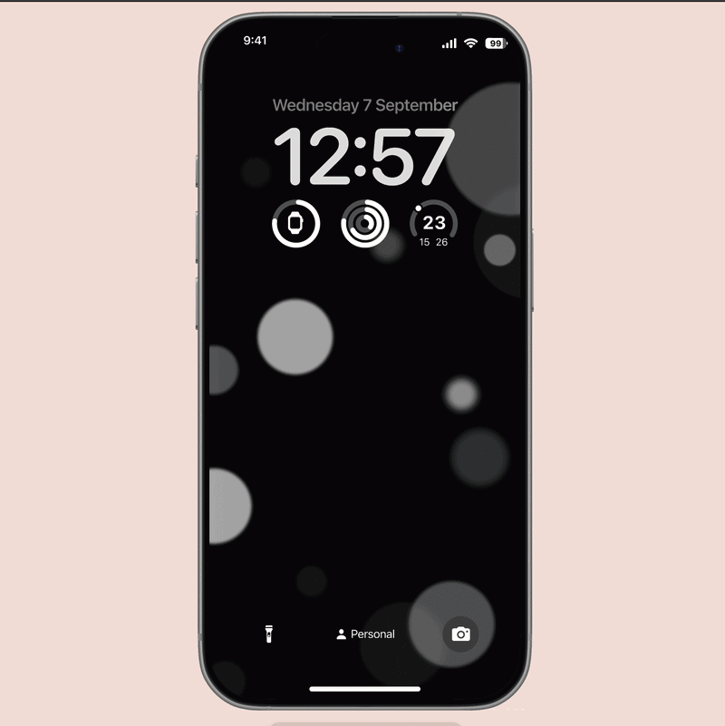
Geo-tagged nodes, sending reminders when you arrive at a saved location
GPS reminders fire when you arrive home (or another saved location) instead of at a fixed time.
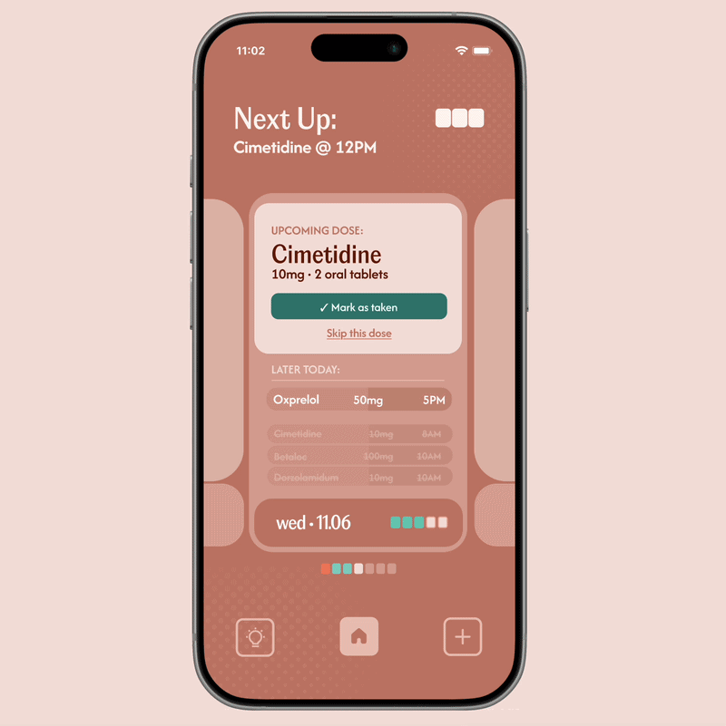
Adaptive scheduling in practice
Pattern recognition: if the internal AI notices you tend to take a medication earlier or later than the set time, it prompts the user to adjust their schedule, so reminders match how you actually take it.
A design failure dressed up as a health crisis
I started with the data because it reframes the problem immediately.
I then looked at why existing apps fail — through user interviews, desk research, and a competitive review of Medisafe, MyTherapy, and Care4Today.
"I downloaded three different apps. I always end up back to just setting an alarm."
"My mom can't figure out the interface. I just call her every morning now."
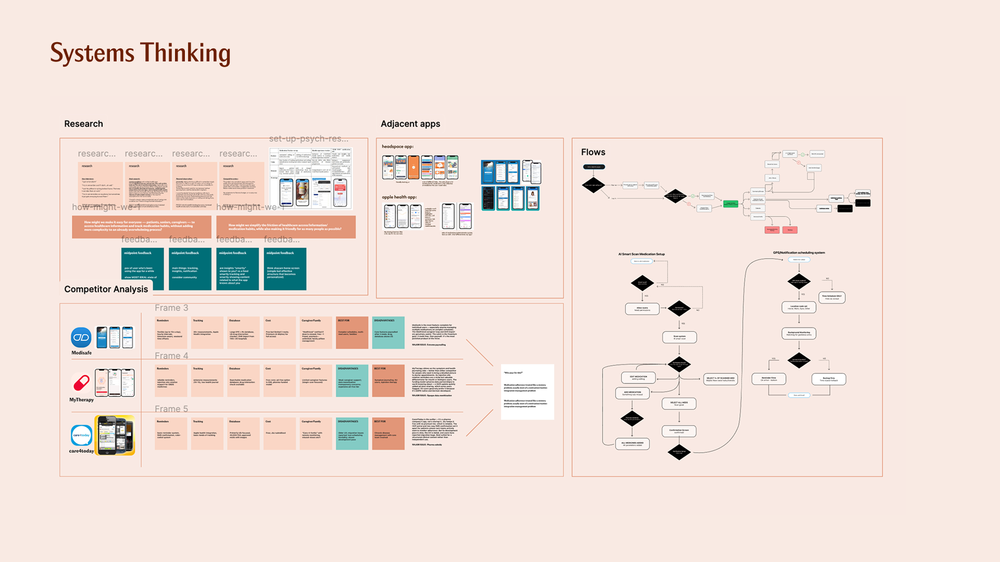
The pattern was consistent: apps work for a few weeks, then get abandoned. Not because the reminder concept fails — but because the apps create their own burden. I mapped five recurring failure modes across every product I reviewed:
Setup friction
Adding five medications manually takes 20+ minutes. The people with the most complex regimens are least likely to finish setup. The people who need help most are the ones being left behind.
Unreliable notifications
The single most common complaint across all apps. One missed reminder destroys trust permanently, and users go back to alarms.
Wrong user model
Many apps are designed for young, healthy people tracking supplements. Not for a 70-year-old managing 8 prescriptions from three different doctors. 51% of adults 65+ take 5+ prescriptions daily. They're the most underserved, and forEach major app leaves them behind.
No adaptation
Life changes: you travel, your schedule shifts, a doctor adds a new prescription. The app doesn't adapt. It falls out of sync with reality and becomes useless.
No enduring value
Once a habit forms (~90 days in), reminders become noise. There's no reason to keep using the app. A $5 pillbox wins on long-term retention because it requires zero maintenance.
Any app trying to replace a pillbox needs to do things a pillbox structurally cannot, not just digitize the same experience.
Three clear gaps in the market
Based on the research, I identified three clear gaps in the market that Iaso can fill:
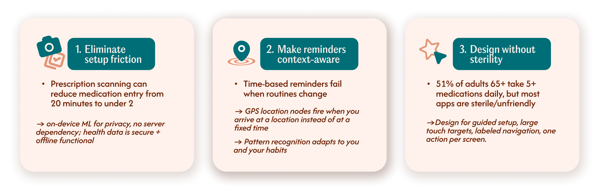
Three rounds before it tested well
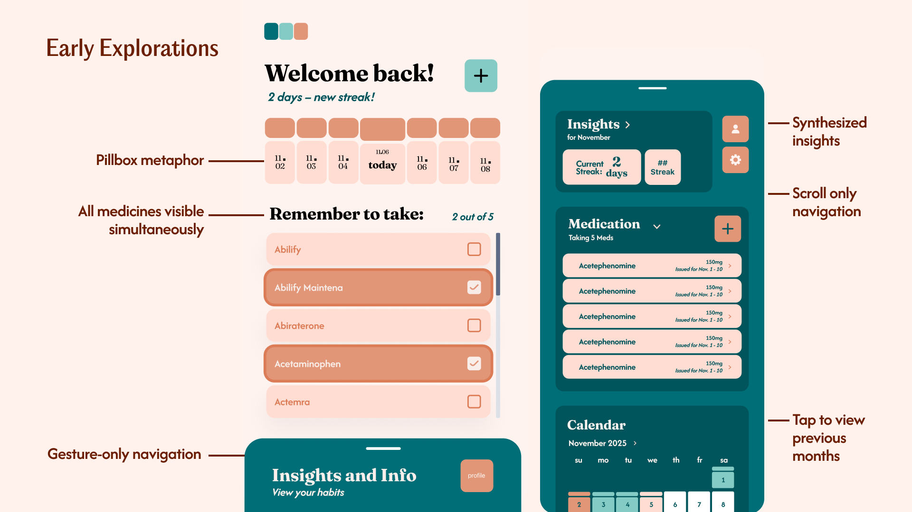
During an early user session, a participant in her late 60s stared at the screen for a moment and asked: "Which one do I press?" That one moment drove the next three rounds of iteration.
Checkboxes → confirmation action
Checkboxes carry the mental model of "select items in a list." That's not what a patient needs at 9 AM, as they need to confirm they took something right now. I replaced them with a single prominent confirmation action per dose group.
All medications at once → current dose dominant
Showing everything simultaneously created visual competition. The redesign surfaces only what needs action now, with upcoming doses visible but visually subordinate. There's a clear answer to "what do I do?" the moment you open the app.
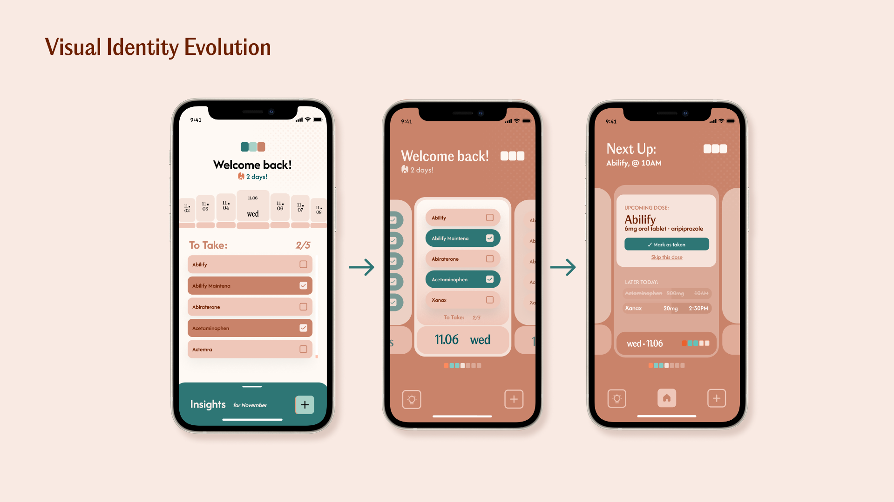
Color logic simplified
Early versions used teal for both "current time indicator" and "taken" state, which created genuine confusion. Final system: one color per state, no overlap or ambiguity.
Navigation labeled
Icon-only bottom navigation replaced with labeled tabs and gesture-based navigation were removed as the main navigation method. Seniors don't explore, they tended to execute, so hidden swipeable screens were replaced with explicit navigation.
Designing for the harder use case
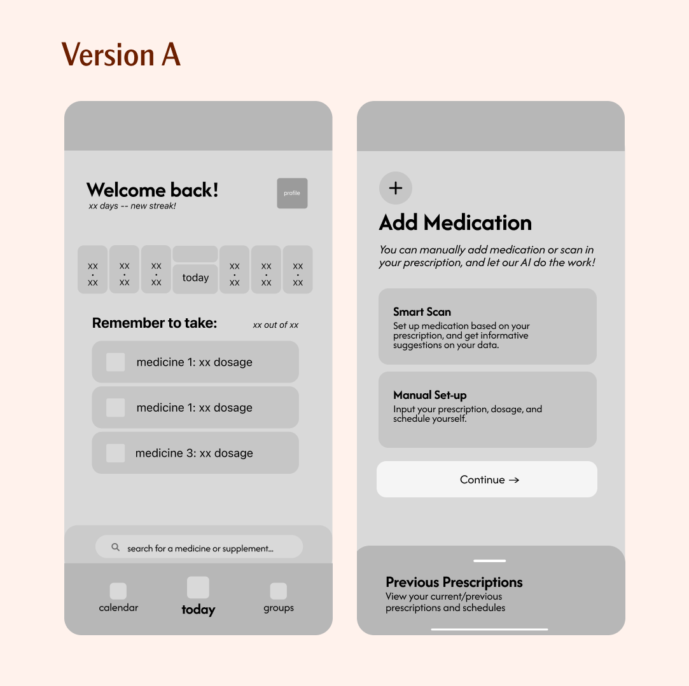
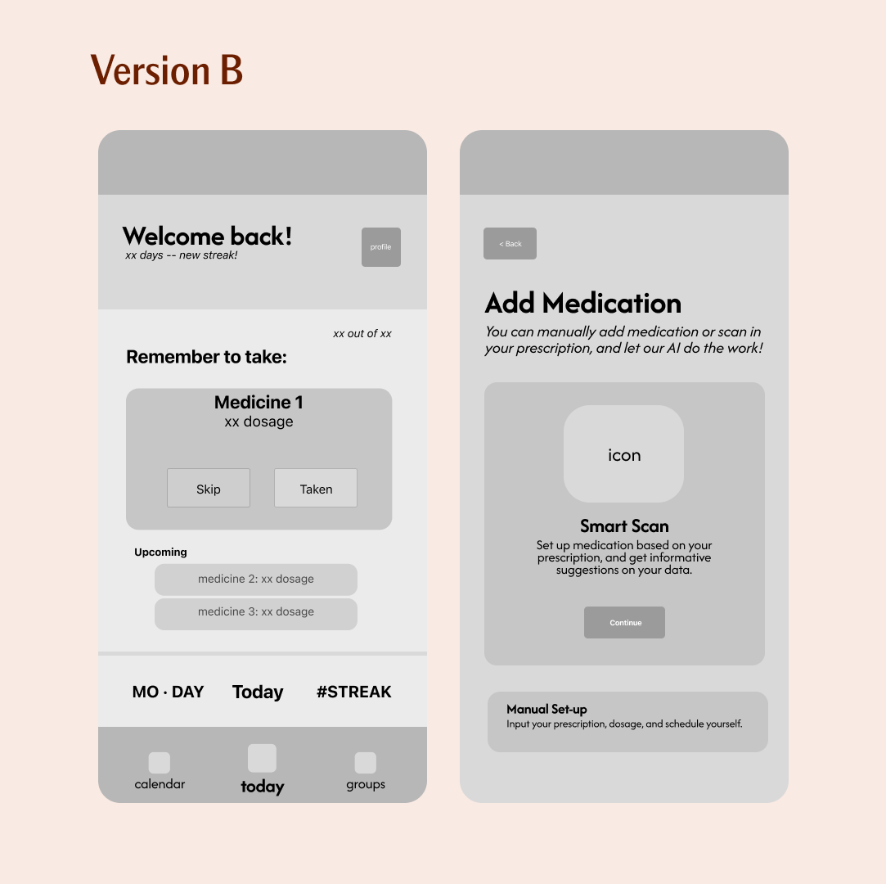
A/B test: home screen
I tested with users across two age groups: adults 25–40 and adults 60+. The failure modes were different for each, which created a real product tension.
Younger users wanted density — more information, faster navigation, less hand-holding. Older users consistently needed larger targets, explicit labels, slower flows, and more confirmation steps before committing to an action.
Version A showed all today's medications in a list with checkboxes. Clean, information-dense, familiar from other apps. Version A looked better in a static screenshot.
Version B made the current dose dominant with a single confirmation action, upcoming doses shown smaller below. Version B performed better in every real-use metric — task completion speed, error rate, and confidence rating from older users.
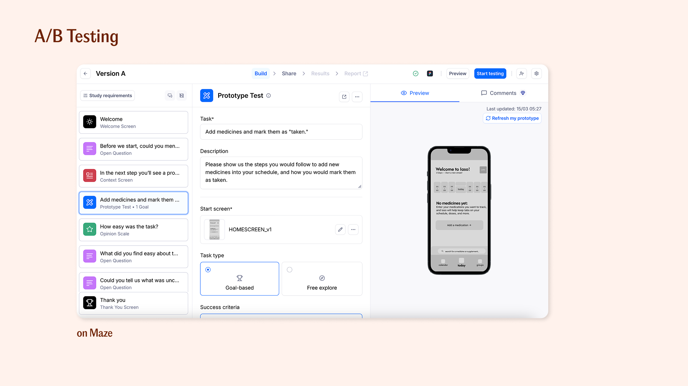
Iaso is designed to not exclude the harder use case. Optimizing for the most demanding user makes the product better for everyone, without making it worse for anyone.
Designing for Month 6, not Month 1
Building this solo — designing and developing in parallel — changed how I make decisions. Every choice I made in Figma, I would have to implement in SwiftUI. That constraint made me more honest.
It's easy to design a beautiful multi-step confirmation flow; it's harder to build one that handles a blurry scan, an unrecognized drug name, or a notification that fires while Do Not Disturb is on. The edge cases are the product.
The research taught me something I didn't expect: the medication adherence problem isn't unsolved because nobody has tried. It's unsolved because most solutions optimize for the first 30 days. The app that gets downloaded is a different problem than the app that gets used a year later. I'm designing for the second one, which means the smart scan and GPS features aren't additions, they're the core argument for why Iaso still matters in Month 6 and beyond.
Both projects share the same insight: healthcare solutions fail when they solve a narrow technical problem while ignoring the broader human context. Atlas worked at the hardware and ecosystem level. Iaso brings the same holistic thinking to the software layer: same patient, different surface.